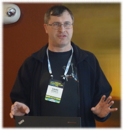

A new API for mounting filesystems
The mount() system call suffers from a number of different shortcomings that has led some to consider a different API. At last year's Linux Storage, Filesystem, and Memory-Management Summit (LSFMM), that someone was Miklos Szeredi, who led a session to discuss his ideas for a new filesystem mounting API. Since then, David Howells has been working with Szeredi and VFS maintainer Al Viro on this API; at the 2018 LSFMM, he presented that work.
He began by noting some of the downsides of the current mounting API. For one thing, you can pass a data page to the mount() call, but it is limited to a single page; if too many options are needed, or simply options with too many long parameters, they won't fit. The error messages and information on what went wrong could be better. There are also filesystems that have a bug where an invalid option will fail the mount() call but leave the superblock in an inconsistent state due to earlier options having been applied. Several in the audience were quick to note that both ext4 and XFS had fixed the latter bug along the way, though there may still be filesystems that have that behavior.

There are also problems with the in-kernel parameter passing using the data page, Howells continued. For example, a namespace cannot be turned into a string, which is what would be needed to pass a namespace option. Right now, the namespaces are inherited from the parent filesystem, but automounts should inherit the mount and network namespace from the process that caused the mount.
In the kernel, the first step of mounting is to create a filesystem context, which is represented by a struct fs_context. It is an internal kernel structure that can be initialized and used directly by in-kernel users, but will be created by the filesystem drivers for user-space callers. It contains a bunch of different fields, including operations for parsing and validating options, filesystem type, namespace and security information, and more. More information can be found in a commit in Howells's Git repository for this work.
Viro suggested that it may be useful to think of the filesystem drivers as external servers; they may actually reside in the kernel (or not) but mounting is making a request to these servers. A user-space caller would get a file descriptor by calling fsopen(), then write options and configuration information to that file descriptor, followed by a "create" command that would generate the superblock and root directory. Howells has working code for something like the following:
fd = fsopen("nfs", 0);
write(fd, "d server:/dir");
write(fd, "o tcp");
write(fd, "o intr");
write(fd, "x create");
That would create the context for an NFS filesystem on "server" with two
options (TCP transport and interruptible operation). The final write is
what actually creates the context. The context can be used to mount the
filesystem with a call like:
fsmount(fd, "/mntpnt", flags);
The flags for fsmount() would govern options, such as
nodev and noexec, and propagation attributes like
"private" and "slave". Options for fsopen() might include things
like UID/GID translation tables for network filesystems like NFS and to
eliminate the need for something like shiftfs.
There would also a new system call (fspick()) for doing superblock reconfiguration for remounting, bind mounting, and so on. That is Howell's idea, anyway; Viro has suggested several new calls, such as mount_new(), mount_clone(), and mount_move() to handle that sort of thing.
Howells was asked about what would happen with the existing mount API. It would remain available, though it would likely eventually be switched to an implementation on top of the new API. It is not likely that it could ever be removed entirely. So far, he has added filesystem context handling for most of the internal filesystems (e.g. procfs, sysfs, and kernfs) as well as NFS and AFS. But, he warned, that bikeshedding is always going to be a problem for patches of this nature.
| Index entries for this article | |
|---|---|
| Kernel | Filesystems/Mounting |
| Conference | Storage, Filesystem, and Memory-Management Summit/2018 |
Posted May 6, 2018 17:59 UTC (Sun)
by zyga (subscriber, #81533)
[Link]
Posted May 7, 2018 9:47 UTC (Mon)
by felipebalbi (subscriber, #56613)
[Link]
Posted Jul 15, 2018 11:03 UTC (Sun)
by willy (subscriber, #9762)
[Link] (2 responses)
Posted Jul 16, 2018 23:33 UTC (Mon)
by flussence (guest, #85566)
[Link] (1 responses)
Posted Jul 16, 2018 23:47 UTC (Mon)
by willy (subscriber, #9762)
[Link]
A new API for mounting filesystems
A new API for mounting filesystems
A new API for mounting filesystems
A new API for mounting filesystems
A new API for mounting filesystems